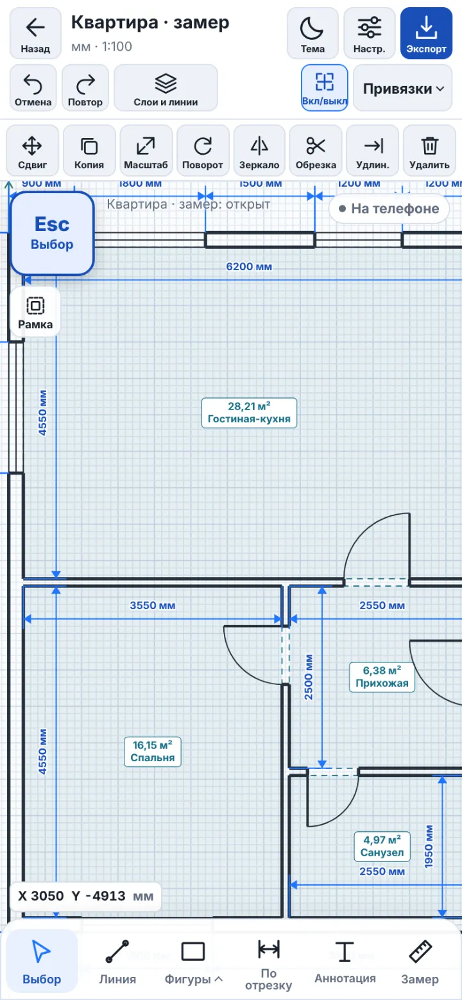

PDF, который не стыдно отправить клиенту
Лист A4 в масштабе от 1:20 до 1:200 с размерами, площадями, ведомостью замеров и фото.

Для архитекторов, дизайнеров и мебельщиков
Zamer CAD — чертёж замера прямо в телефоне. Линии, размеры и площади — на объекте, а PDF клиенту и DWG проектировщику — ещё до вашего отъезда.

Для всех, кто ходит на замер:
01 · Было — стало
02 · Как это работает
Линиями по точкам или прямо с дальномера. Привязки и углы — как в AutoCAD.

Размеры и м² каждой комнаты сразу на плане. Без калькулятора.

PDF — клиенту, DWG и DXF — проектировщику. В одно касание.
03 · Не только замер
Откройте DWG или DXF от проектировщика прямо в телефоне, допишите размеры, поправьте и отправьте обратно. Без ноутбука.
Открыть DWGФайл от проектировщика — сразу в работе
04 · Возможности
Лист A4 в масштабе от 1:20 до 1:200 с размерами, площадями, ведомостью замеров и фото.
Нажали кнопку на дальномере — размер уже в чертеже. Ни одной переписанной цифры.
Обведите комнату — м² и периметр сразу на плане. Общая площадь проекта — одной цифрой.
Проёмы, ниши, розетки, трубы и отметки высот. Готовые шаблоны для мебельщика и архитектора.
Подвал, новостройка без связи — неважно. Чертежи хранятся у вас на телефоне.
История версий проекта, корзина и резервная копия .zamer. Обновления приходят сами.
05 · Цены
Начните бесплатно. Платите, когда Zamer CAD уже экономит вам время.
$7в месяц
Для разовых проектов и сезонной работы.
Купить на месяц$59в год
≈ $4,92 в месяц — экономия $25.
Купить на годЦены в долларах США. Оплата банковской картой.
06 · Вопросы
Да. В списке проектов нажмите «Открыть файл» и выберите DWG или DXF — чертёж откроется со слоями. Допишите замеры и отправьте обратно в DWG или PDF.
Логика та же: линии, полилинии, фигуры, девять видов размеров, обрезка, удлинение, зеркало, массив, скругление, слои, блоки и 11 привязок. Чертежи открываются в AutoCAD через DWG и DXF.
Нажмите «Скачать» и откройте файл из уведомления или папки «Загрузки». Если Android спросит — разрешите установку из этого источника и нажмите «Установить». Меньше минуты.
Приложение подписано ключом разработчика. Обновления приходят только из официального источника и проверяются по контрольной сумме SHA-256 перед установкой.
Оформите Pro — $7 в месяц или $59 в год. Ваши чертежи в любом случае остаются на вашем телефоне.
Android 10 или новее, приложение весит около 6 МБ и работает без интернета. Дальномер — Leica DISTO D2 или совместимый DISTO с Bluetooth, без него размеры вводятся с клавиатуры.
Скачайте Zamer CAD и проверьте на ближайшем объекте. 14 дней — бесплатно.
Скачать бесплатноНаведите камеру телефонаи скачайте сразу на Android